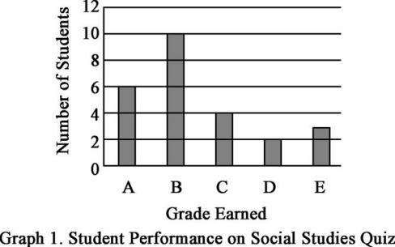
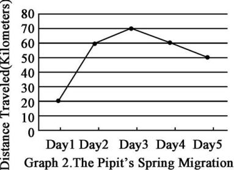
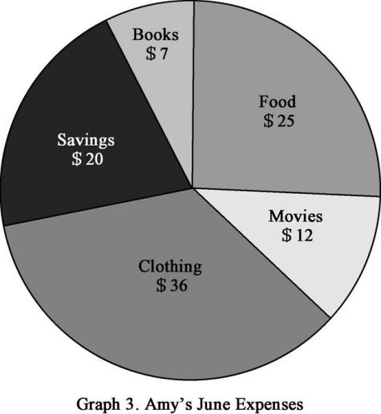

02-2015浙江，B
Graphs can be a very useful tool for conveying information,especially numbers,percentages,and other data.A graph gives the reader a picture to interpret.That can be a lot more efficient than pages and pages explaining the data.
Graphs can seem frightening,but reading a graph is a lot like reading a story.The graph has a title,a main idea,and supporting details.You can use your active reading skills to analyze and understand graphs just like any other text.
Most graphs have a few basic parts:a caption or introduction paragraph,a title,a legend or key,and labeled axes.An active reader looks at each part of the graph before trying to interpret the data.Captions will usually tell you where the data came from(for example,a scientific study of 400 African elephants from 1980 to 2005).Captions usually summarize the author's main point as well.The title is very important.It tells you the main idea of the graph by stating what kind of information is being shown.A legend,also called a key,is a guide to the symbols and colors used in the graph.Many graphs,including bar graphs and line graphs,have two axes that form a corner.Usually these axes are the left side and the bottom of the graph.Each axis will always have a label.The label tells you what each axis measures.
Bar Graphs

A bar graph has two axes and uses bars to show amounts.In Graph 1,we see that the x-axis shows grades that students earned,and the y-axis shows how many students earned each grade.You can see that 6 students earned an A because the bar for A stretches up to 6 on the vertical measurement.There is a lot of information we can get from a simple graph like this(See Graph 1).
Line Graphs

A line graph looks similar to a bar graph,but instead of bars,it plots points and connects them with a line.It has the same parts as a bar graph—two labeled axes—and can be read the same way.To read a line graph,it's important to focus on the points of intersection rather than the line segments between the points.This type of graph is most commonly used to show how something changes over time.Here is a graph that charts how far a bird flies during the first five days of its spring migration(See Graph 2).
The unit of measurement for the x-axis is days.The unit of measurement for the y-axis is kilometers.Thus we can see that,on the first day,the pipit flew 20 kilometers.The line segment goes up between Day 1 and Day 2,which means that the bird flew farther on Day 2.If the line segment angled down,as between Day 4 and Day 5,it would mean that the bird flew fewer kilometers than the day before.This line graph is a quick,visual way to tell the reader about the bird's migration.
Pie Graphs

A typical pie graph looks like a circular pie.The circle is divided into sections,and each section represents a fraction of the data.The graph is commonly used to show percentages;the whole pie represents 100 percent,so each piece is a fraction of the whole.
A pie graph might include a legend, or it might use icons or labels within each slice. This pie graph shows one month's expenses(See Graph 3).
Food $25
Movies $12
Clothing $36
Savings $20
Books $7
全部题目与逐题讲解
- A.a guide to the symbols and colors
- B.an introduction paragraph
- C.the main idea
- D.the data
查看答案与讲解
答案：A
1.A 细节理解题。根据第三段中的“A legend, also called a key, is a guide to the symbols and colors used in the graph.”可知A项正确。
- A.4.
- B.6.
- C.10.
- D.20.
查看答案与讲解
答案：D
2.D 推理判断题。根据Graph 1可以看出,获得A的人数为6,获得B的人数为10,获得C的人数为4,由此可知获得C或者C以上的人数为20。
- A.Day 1
- B.Day 2
- C.Day 3
- D.Day 4
查看答案与讲解
答案：C
3.C 细节理解题。根据Graph 2可以看出,在第三天(Day 3),鸟儿飞行的距离最远,达到了70千米,故C项正确。
- A.Food.
- B.Books.
- C.Movies.
- D.Clothing.
查看答案与讲解
答案：D
4.D 细节理解题。根据Graph 3可以看出,Amy花在服装上的钱最多,达到了36美元,故D项正确。
本篇暂无未重复外刊。